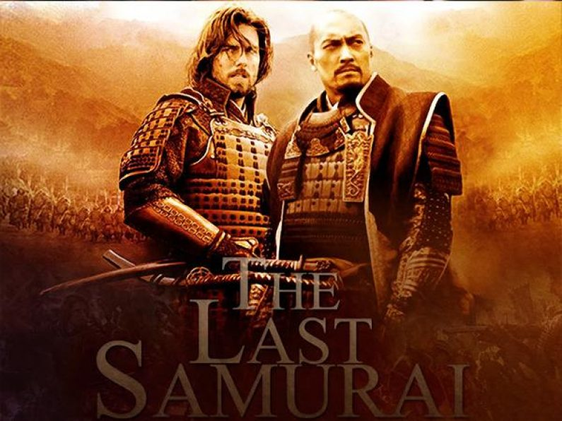
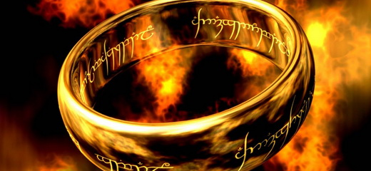
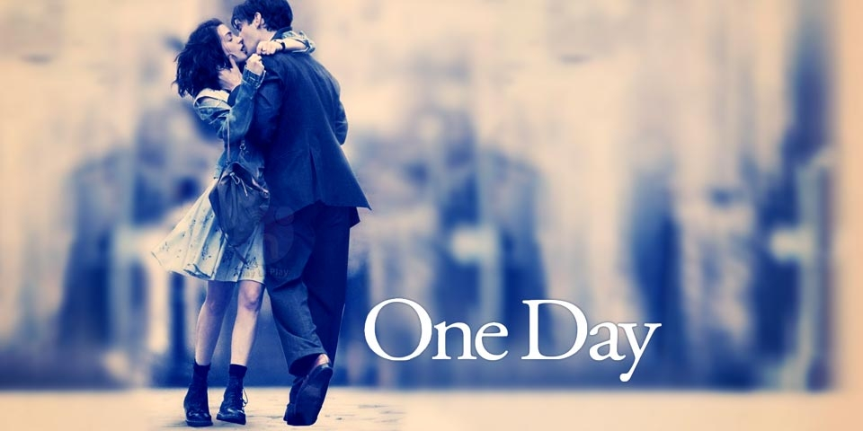

Prvi FEST, pod podnaslovom "Hrabri novi svet", otvoren je 9. januara 1971. u Domu Sindikata, projekcijom filma "Mes" Roberta Altmana. Zamisljen kao godisnji presek najboljih filmova sezone, beogradski Medjunarodni filmski festival FEST izrastao je u jednu od najznacajnijih filmskih smotri i postao jedan od glavnih dogadjaja u kulturnom zivotu Beograda, uz koga su odrasle mnoge mlade generacije.Ono što ga je krasilo svih proteklih godina jeste cinjenica da je bio sirom otvoren za sve kinematografije sveta, i za sve relevantne autore, ali i filmove koji se nece naci na bioskopskom repertoaru. Kolika je vaznost FEST-a ogleda se i u cinjenici da je beogradska publika - sa filmovima nekih od najvecih reditelja danasnjice kao sto su Teo Angelopulos, Bob Rafelson, Volker Schlendorf, Dejvid Kronenberg, Ken Rasel, Vim Venders, Kischlovski, Hercog... imala priliku da se po prvi put sretne upravo na FEST-u. Do sada - FEST je imao oko cetiri miliona gledalaca i skoro 4000 značajnih svetskih filmova - koji su na njemu imali jugoslovensku / srpsku a cesto i regionalnu premijeru. Iako je prvi FEST odrzan pre vise od 40 godina i ove godine sa istom energijom nastavlja svoj veliki kulturoloski i obrazovni zadatak sireci filmske horizonte svim ljubiteljima filmske umetnosti.
Matrix
Glavne uloge: Kijanu Rivs, Kari-En Mos
Trajanje: 120min
Zanr: Naucna fantastika

Poslednji Samuraj
Glavne uloge: Tom Cruise, Katsumotu
Trajanje: 150min
Zanr: Akcija

Gospodar prstenova I deo
Glavne uloge: Orlando Blum, Precious
Trajanje: 160min
Zanr: Naucna fantastika

Jedan dan
Glavne uloge: Anne Hathaway, Dexter
Trajanje: 150min
Zanr: Komedija